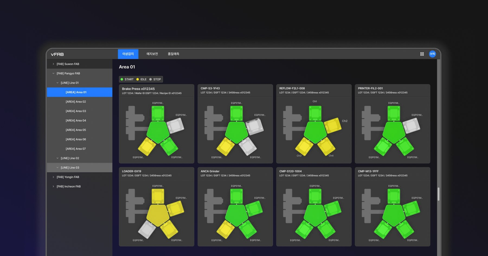
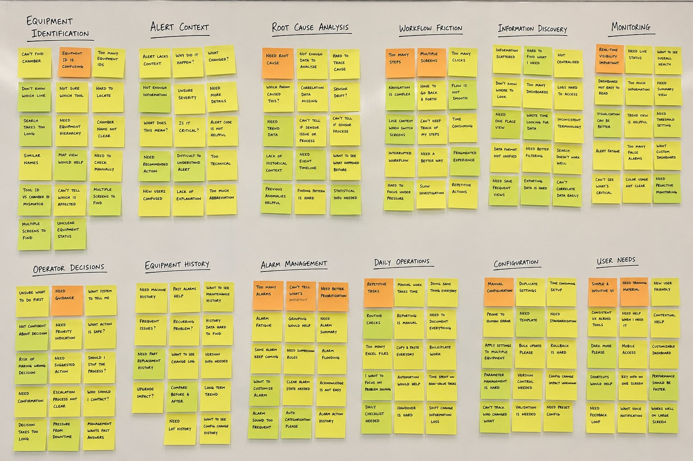
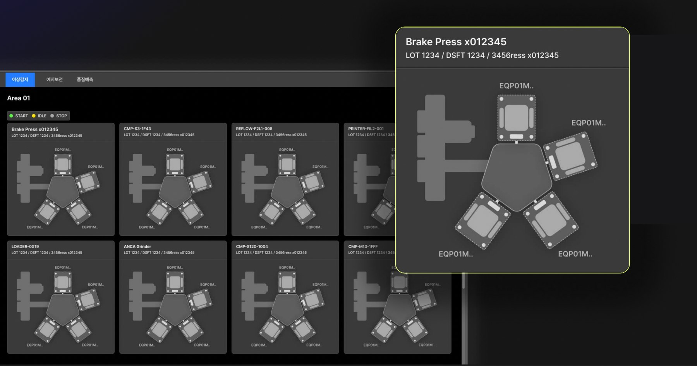
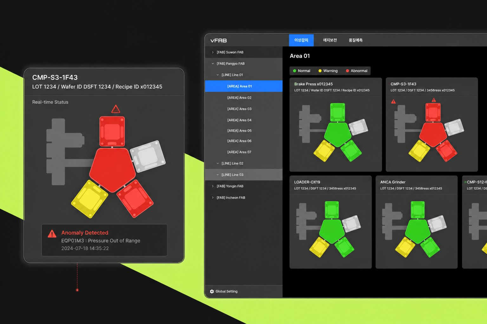
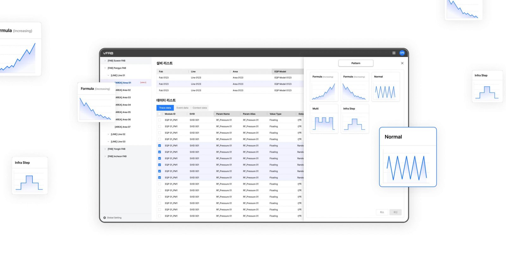
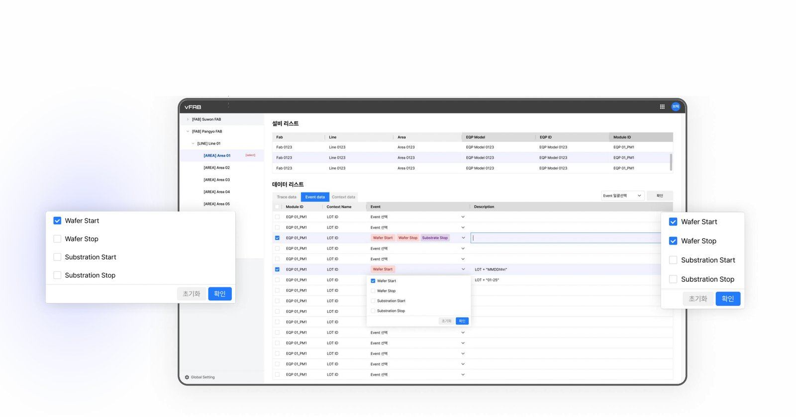
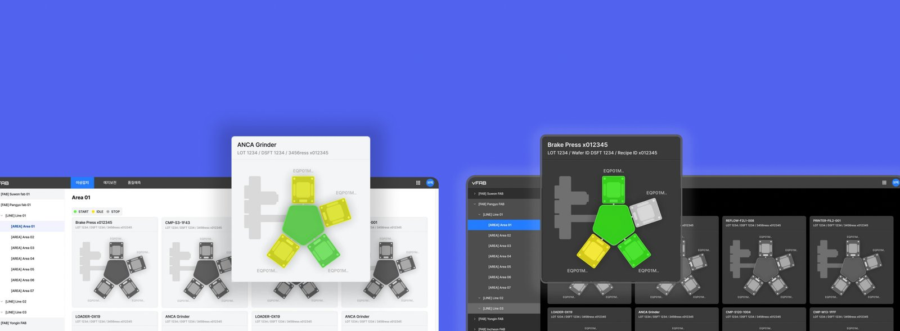

Anomaly Detection Service
Helping semiconductor operators detect equipment failures before they become production losses.

여기에 images/hero.jpg 를 넣으세요 (권장: 1200×800 이상)I led the design of Semiconductor Anomaly Detection Service, an AI-powered monitoring platform designed for semiconductor manufacturing environments. Working closely with data analysts and developers, I designed a monitoring experience that enables operators to quickly identify abnormal equipment conditions, understand root causes, and respond before production is affected.
Google Blog ↗ 여기에 images/quote-bg.jpg 를 넣으세요 (가로로 넓은 분위기 사진)
여기에 images/quote-bg.jpg 를 넣으세요 (가로로 넓은 분위기 사진)
"Handing someone your phone
can feel like handing over your whole diary…"
Problem: Detecting anomalies isn't the problem. Understanding them is.
Manufacturing systems already generate thousands of real-time alerts and sensor readings every day. The real challenge begins after an anomaly is detected. Operators still spend valuable time identifying which equipment is affected, locating the exact component, and understanding what caused the issue before taking action.
Recognising this gap, we saw an opportunity to help operators regain control of the investigation process — turning a wall of raw alerts into a clear, guided path to the root cause.
Research
Understanding how operators investigate anomalies. To understand how operators respond to equipment anomalies in real manufacturing environments, I conducted user interviews, workflow analysis, and collaborated closely with domain experts throughout the design process. Rather than focusing on what users clicked, the research aimed to uncover how they made decisions under time pressure and what information they needed most when responding to equipment failures.

여기에 images/research-affinity-map.jpg 를 넣으세요Finding the affected equipment takes too long.
Operators often knew an anomaly had occurred, but identifying the exact equipment or chamber required navigating multiple screens and interpreting complex equipment IDs.
AI detects anomalies, but doesn't provide enough context.
Receiving an alert wasn't enough. Operators needed to understand what changed, why it mattered, and whether immediate action was required.
Critical information is scattered across multiple views.
Investigating a single anomaly required switching between dashboards, logs, equipment information, and monitoring screens. This fragmented workflow increased cognitive load during time-sensitive situations.
Repetitive equipment management slows daily operations.
Routine configuration tasks were repeated across multiple pieces of equipment, increasing manual effort and creating opportunities for human error.
Solution: Designing for faster understanding, not just better monitoring.
Based on the research findings, I redesigned the monitoring experience to help operators move seamlessly from detection to understanding, and finally to action. Instead of exposing more data, the interface prioritizes the information users need most at the moment an anomaly occurs.
See the affected equipment at a glance.
Operators no longer need to interpret complex equipment IDs or switch between multiple screens. By introducing a visual equipment map based on the real manufacturing environment, the affected chamber can be identified immediately.

여기에 images/equipment-card-detail.jpg 를 넣으세요We paid meticulous attention to how each equipment card represents its real physical layout — going beyond a single alert icon to show exactly which chamber is affected and how it fits into the wider line.
Make anomaly status instantly recognizable.

여기에 images/anomaly-status-detail.jpg 를 넣으세요Rather than relying on tables and numbers, equipment status is communicated through consistent visual indicators and standardized color semantics. This reduces cognitive load and allows operators to recognize abnormal conditions without reading detailed information.
Keep investigation in a single workflow.
Investigating an anomaly previously required switching between multiple systems. The redesigned workflow consolidates related information into one place, helping operators investigate, verify, and respond without interrupting their flow.

여기에 images/workflow-pattern-detail.jpg 를 넣으세요Reduce repetitive operational tasks.
Managing equipment settings often involved repeating the same actions across multiple devices. To improve operational efficiency, bulk management features and simplified configuration flows were introduced.

여기에 images/bulk-config-detail.jpg 를 넣으세요Impact: Helping operators make faster decisions with greater confidence.
The redesigned monitoring experience reduced the time required to identify abnormal equipment and streamlined the investigation workflow. By simplifying complex operational data into actionable information, the platform helped operators respond more confidently in time-critical situations.

여기에 images/impact-detail.jpg 를 넣으세요Reflection
Building AI-powered products isn't just about surfacing predictions. It's about helping people trust the system, understand uncertainty, and make confident decisions under pressure.